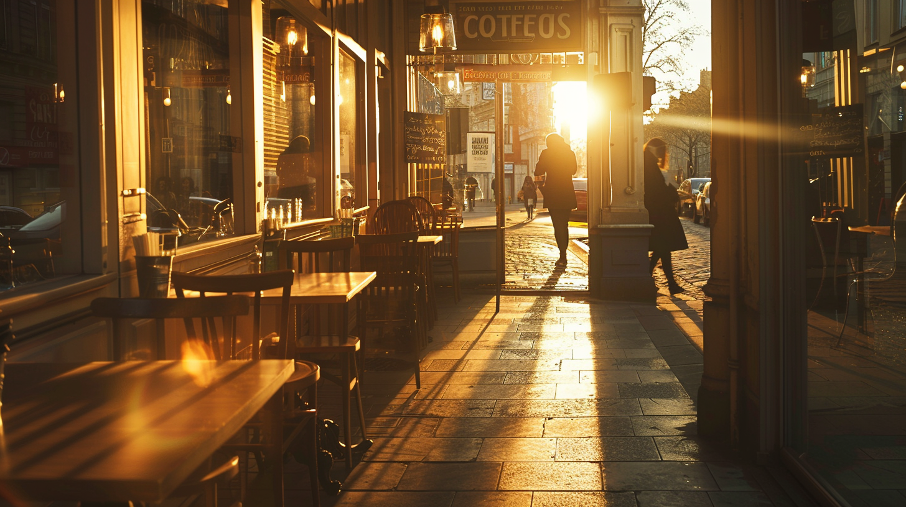
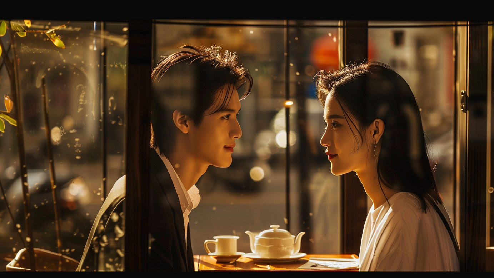

创作你的AI短剧
从一段简短的"三行情诗"开始，创造属于你的故事世界
1
情诗创意
2
剧本生成
3
角色设定
4
配音选择
5
分镜设计
6
最终剪辑
❓ 查看教程：如何设计有效的分镜


分镜设计
调整场景分镜，添加视觉元素

场景 1
✏️
🔄
临近傍晚的咖啡厅，阳光刺到地面，就是一场心碎日落。
场景 2
✏️
🔄
顾辰推开咖啡厅的门，缓缓走入：林然果然还没有来，还是那么爱迟到。
场景 3
✏️
🔄
顾辰落座后一直摩挲着咖啡杯，等着林然的到来。
场景 4
✏️
🔄
林然推门走入，一眼万年。
场景 5
✏️
🔄
林然和顾辰相视一笑,阔别12年后的重逢竟是这样。

场景 6
✏️
🔄
林然和顾辰相谈甚欢。
场景 7
✏️
🔄
顾辰轻搅咖啡，静静听着林然讲话。
添加
添加新的场景分镜
时间线排序
🔍 预览
🔄 重新排序
1
2
3
4
5
6
7
+